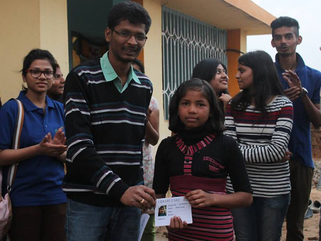
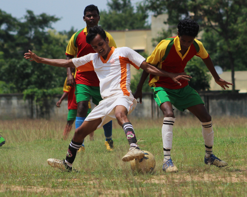
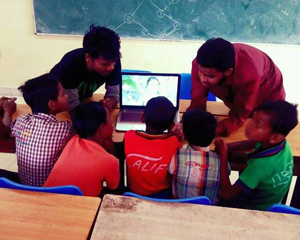
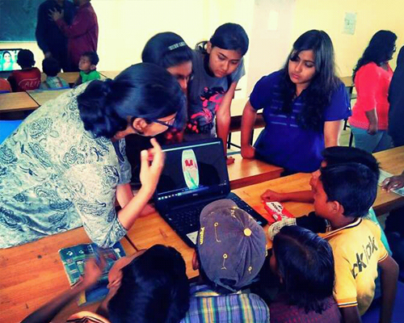
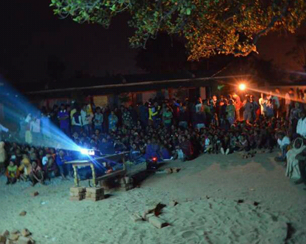
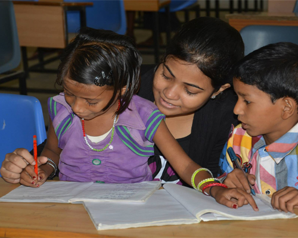

WHAT WE DO
DRISTI LIBRARY
A library was established in the village of Panchauli to help children with the joy of reading. Books were collected on campus by our student volunteers. The library presently contains a variety of books ranging from academia to novels and short story books. Lack of resources has always been the biggest hurdle that children from rural background face. The setting up of library is playing a prominent role in order to minimize this problem. The library has been setup in one of the house in the village, thus providing easy access to the village kids at a regular basis. It boasts of a collection of over 1000 books.


F.C. DRISTI
This has been one of the most unique achievements of DRISTI so far. We have been able to organize two all-girls as well as boys football teams from the villages of Panchauli and Masu. DRISTI regularly organizes football matches between them on Independence Day and Republic Day and the first match ever was a national media phenomenon. People were astonished with the professional way in which these little girls played their first match ever and the sheer hard work and dedication of our student volunteer coaches was applauded and appreciated greatly.
FESTIVALS CELEBRATION
DRISTI organises various celebrations on occasions such as Holi, Diwali, Children’s Day, Independence Day, Republic Day and many more. Various competitions are also organised pertaining to add fun in the festivities. The DRISTI team has come up with creative events like face painting, kite flying, pot painting, diya decoration, collage making, singing, poem recitals, dancing events and many such activities. All these competitions are highly popular amongst children. For women, mehendi and rangoli making competitions have also been organized to much enthusiastic participation. These events have been very constructive towards induce a feeling of togetherness and healthy competition in the children.

CARRER COUNCELLING
DRISTI is a proud member of the larger process in giving a proper counselling to free rural India from the unfortunate clutches of addiction. Unfortunately, many youth of rural India are found engulfed by drug addiction or on the verge of getting so, leaving them aimless and making them dependent. DRISTI organises regular career counselling sessions for such people in order to help them find a goal and meaning in life. The volunteers do appropriate research in finding different career opportunities for them and also satisfy their queries. For the younger minds, volunteers present them with various career options, motivating them to achieve a better future.
COMPUTER CLASSES
On surveying the village, volunteers found out that the children had no exposure to technology. Ironically, the only exposure they had to this all-practical concept was through textbooks. They knew what a computer was but didn’t know the basics of operating it. Hence DRISTI shaped a tangible fulfilment to this need by organising computer classes in the computer lab of BIT Mesra. These classes were later shifted to the village due to low participation of students due to unfamiliar atmosphere, with volunteers happily carrying their own laptops to impart knowledge. Computer classes have also been organised in Kanke for students of government schools.


NIGHT SESSIONS
Visual media has always been a greater means to reach the masses than any other form. Night sessions are DRISTI's approach of using the fact to the benefit of society.In night sessions both fun movies and socially vigilant videos are shown. Movies like ‘Swades’ and documentaries and shows like Satyamev Jayate are shown via projector. These shows are well appreciated by the village folks. Various videos on harms of drug addiction, smoking, drinking importance of girl education; maintenance of sanitation are also shown. The response to these videos have been very positive and brought about important and desired changes in the mind-set of people.
TUITION CLASSES
There exists a huge section of the society for whom it’s a distant dream. As we explored the villages, it was a quick realization that they needed motivation and additional resources for their upliftment. Since then DRISTI has organized regular tuition classes for children who cannot afford tutoring services. The tuition mostly aimed at the preparation for national level school exams like JNV, NETRAHAT etc. It’s a delight for the volunteers to share their knowledge with the children.Volunteers take turns and go to nearby village school where children gather. Tuition classes along with regular preparatory classes have been among the most impactful work that DRISTI does.

EVENTS
Along with the regular tuition classes, day sessions are also organised. These sessions are broadly based on unique and diverse themes like Importance of Cleanliness (“Swachhta”), Magic of Science, Say No to Addiction, and Women Empowerment etc. In these sessions, villagers are informed about various issues and facts by means of videos, street plays (nukkad nataks) and working models. Volunteers then interact with the children and adults to ensure that they’ve the message and is instilled in their daily lives.